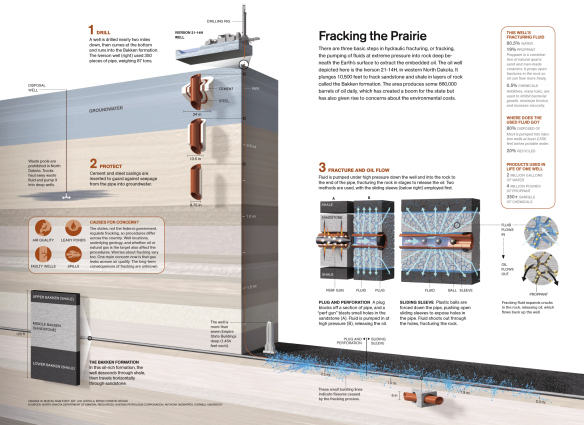

Mike Stubna, PhD
12 March 2014
Notes from the Data Philly meetup
Go back to the main page

From: National Geographic
From: National Geographic
Jonathan Corum, who designs visualizations for the NY Times, says to know your audience and design for them
potential design ranges:
From the NY Times: Where poor and uninsured Americans live
From the NY Times: 512 paths to the White House
From the NY Times: Keplers tally of planets
From http://style.org/visualized/
When he reran his script, he discovered new things about the data set, because of the visualization
how much is …
too much?
Charles Minard's map of Napoleon's Russian campaign of 1812
x and y coordinates and direction of travelAs data scientists, we are very comfortable using Python, MATLAB, R, etc., for
It would be ideal to have a similarly flexible framework for rapidly iterating on developing data visualizations
html, provides the structure of the document.css, how styles are applied.javascript typically provides the interactivity, but is also used to modify the structure and the styling. <svg width="300" height="200">
<rect x="50" y="50" width="200" height="100" fill="orange" stroke="navy" stroke-width="10"/>
</svg>
<svg width="300" height="200">
<g transform="translate(100,50) rotate(30) scale(0.5)">
<rect x="50" y="50" width="100" height="100" fill="none" stroke="navy" stroke-width="10"/>
<rect x="200" y="50" width="100" height="100" fill="none" stroke="navy" stroke-width="10"/>
</g>
</svg>
<svg width="300" height="200">
<ellipse cx="150" cy="100" rx="60" ry="30" fill="none" stroke="navy" stroke-width="5" />
</svg>
Coffeescriptcompiles to javascript but has
SCSScompiles to css but permits
json is made up of strings, numbers, booleans and two basic structures: arrays and objects aka hashes, dictionaries, etc.
# array
[ 1, 2, 3, "a", "b", "c", ["another", "array"] ]
# object
{ "key": "value", "a": 1, "b": false }
json easily.For data visualizations typically, make an array of objects with properties to be represented graphically.
[
{
"country_name": "Afghanistan",
"life_expectancy": Array[52],
"fertility_rate": Array[52],
"population": Array[52]
},
{
"country_name": "Albania",
"country_code": "ALB",
"life_expectancy": Array[52],
"fertility_rate": Array[52],
"population": Array[52]
}
]
From Google: Google public data explorer
x-axis when display time series data. But, you may want to show more than one dependent variable. In this case, you can use animations to transition between the different time states. So, using animations gives you another dimension to plot the data in.html <html>
<head>
<link href="/stylesheets/all.css" media="screen" rel="stylesheet" type="text/css">
<script src="/javascripts/jquery-2.1.0.js" type="text/javascript"></script>
<script src="/javascripts/d3.js" type="text/javascript"></script>
<script src="/javascripts/d3.tip.js" type="text/javascript"></script>
<script src="/javascripts/life_expectancy_fertility_rate_data.js" type="text/javascript"></script>
<script src="/javascripts/example_1.js" type="text/javascript"></script>
</head>
<body class="example_1">
<div id="example" class="data_viz_example"></div>
</body>
</html>
coffeescript constructor: ->
@margin = {top: 20, right: 20, bottom: 30, left: 50}
@width = 960 - @margin.left - @margin.right
@height = 500 - @margin.top - @margin.bottom
# the data
@countries = window.data.countries
@years = window.data.years
@add_graph()
@define_scales()
@add_year_slider()
@add_axes()
@add_tooltips()
# initialize graph
slider = $('#slider')
slider.val('1960')
slider.change()
add_graph: ->
# create the view
@view = d3.select('#example').append('svg')
.attr('width', @width + @margin.left + @margin.right)
.attr('height', @height + @margin.top + @margin.bottom)
.append('g')
.attr('transform', "translate(#{@margin.left},#{@margin.top})")
# add the circles
@circles = @view
.selectAll('circle')
.data(@countries)
.enter()
.append('circle')
.attr('class', 'circle')
define_scales: ->
@x_scale = d3.scale.linear().domain([10, 90]).range([0, @width])
@y_scale = d3.scale.linear().domain([0.5, 10]).range([@height, 0])
# scale r so that area is proportional to population
@r_scale = d3.scale.linear().domain(@get_population_min_max().map (x) -> Math.sqrt(x)).range([1, 50])
# calculates the min/max population for the data set
get_population_min_max: ->
all_data = @countries.reduce (prev, curr) ->
prev.concat curr.population
, []
d3.extent(all_data)
# html5 range inputs are supported by most browsers: http://caniuse.com/#feat=input-range
add_year_slider: ->
slider = $("<input id='slider' type='range' min='1960' max='2011'/>")
curr_val = $("<span id='currentValue'></span>")
$('#example').append [slider, $("<p id='note'>Year: </p>").append(curr_val)]
slider.on 'change', =>
val = slider.val()
curr_val.html val
@view_year @years.indexOf(Number(val))
# transition the circles to the data at the given year
view_year: (i) ->
@circles
.attr('cx', (d) => @x_scale(d.life_expectancy[i]))
.attr('cy', (d) => @y_scale(d.fertility_rate[i]))
.attr('r', (d) => @r_scale(Math.sqrt(d.population[i])))
add_axes: ->
@x_axis_view = @view.append('g')
.attr('class', 'axis')
.attr('transform', "translate(0,#{@height})")
@y_axis_view = @view.append('g')
.attr('class', 'axis')
@x_axis = d3.svg.axis().scale(@x_scale).orient('bottom')
@x_axis_view.call(@x_axis)
@y_axis = d3.svg.axis().scale(@y_scale).orient('left')
@y_axis_view.call(@y_axis)
# axes labels
$('#example').append [
$("<div class='x_label label'>Life Expectancy (years)</div>")
$("<div class='y_label label'>Fertility Rate</div>") ]
# appends tooltips to the bars. Uses d3-tip.js
# see http://bl.ocks.org/Caged/6476579
add_tooltips: ->
tip = d3.tip()
.attr('class', 'd3-tip')
.offset([-10, 0])
.html((d) -> "<span>#{d.country_name}</span>")
@view.call(tip)
@circles
.on('mouseover', tip.show)
.on('mouseout', tip.hide)
scss .data_viz_example {
position: absolute;
margin-top: 40px;
margin-left: 20px;
// ticks and labels
.axis path, .axis line {
fill: none;
stroke: #3F3F3F;
shape-rendering: crispEdges;
}
.label {
position: absolute;
}
.x_label{
top: 500px;
left: 470px;
}
.y_label {
-webkit-transform-origin: 0;
transform-origin: 0;
-webkit-transform: translateX(0px) rotate(-90deg);
transform: translateX(0px) rotate(-90deg);
top: 340px;
left: 0px;
}
}
.d3-tip {
margin: auto;
font-size: 0.8em;
font-weight: bold;
padding: 5px;
background: rgba(0, 0, 0, 0.8);
color: #fff;
}
// Example 1
&.example_1 {
position: relative;
width: 100%;
circle {
fill-opacity: 0;
stroke: #202555;
stroke-width: 2px;
}
#slider {
position: relative;
top: 50px;
width: 400px;
}
#note {
position: relative;
top: 30px;
}
.x_label { left: 400px; }
.y_label { top: 300px;}
}
From NY Times: American time use survey
coffeescript (excerpt) constructor: ->
@data = window.data
@activity_names = @data[0].map (x) -> x.name
@margin = {top: 20, right: 20, bottom: 30, left: 50}
@width = 960 - @margin.left - @margin.right
@height = 500 - @margin.top - @margin.bottom
@create_graph()
@add_axes()
@add_legend()
@add_activity_selector()
@add_year_selector()
# area
@area = d3.svg.area()
.x( (d) => @x_scale(d.x) )
.y0( (d) => @y_scale(d.y0) )
.y1( (d) => @y_scale(d.y0 + d.y) )
# use stack function to map the data into form needed for stacked graph
@stack = d3.layout.stack().values( (d) -> d.values)
data = @stack(@data[0].map (x) ->
name: x.name
values: x.values.map (d,i) -> {x: i, y: d} )
# draw the areas
@view
.selectAll('path')
.data(data)
.enter()
.append('path')
.attr('d', (d) => @area(d.values))
.style('fill', (d) => @color_scale(d.name))
transition: ->
data = @data[@year_select.prop('selectedIndex')]
index = @activity_select.prop('selectedIndex')
data = @stack(data.map (x,i) ->
name: x.name
values: x.values.map (d,j) ->
x: j
y: if index is 0 or index-1 is i then d else 0 )
d3.selectAll('path')
.data(data)
.transition()
.duration(1000)
.attr('d', (d) => @area(d.values))
Each graph binds the data to visual properties in slightly different ways. D3 takes care of animating the graphs between states.
coffeescript (excerpt) # displays the data in a scatterplot
show_scatterplot: ->
bar_width = 20
x_domain = [44, 85]
x_label = 'Life Expectancy'
y_domain = [0, 200]
y_label = 'Countries'
@update_scales x_domain, y_domain
@bars
.transition()
.duration(1000)
.delay((d,i) -> 10*i)
.attr('width', bar_width)
.attr('x', (d) => @x_scale(d.life_expectancy)-bar_width/2)
.attr('y', (d,i) => @y_scale(i) - 20)
.attr('height', @height - @y_scale(9))
.attr('stroke-width', 1)
.attr('rx', 10)
.attr('ry', 10)
@update_axes x_label, false, y_label, true
From interactive visualizations of decision trees
svg transforms can't take advantage of hardware acceleration on iOS devices (see more here) , which means that transformations often aren't as smooth on iOS tablets/phones as on desktop/laptops.